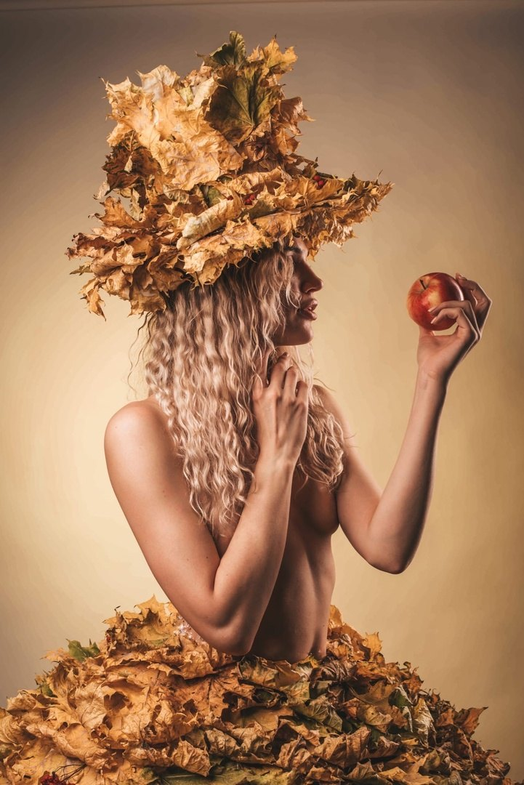

Julia Vaganova
Artistic & Conceptual
Portfolio Category
Artistic & conceptual.
Julia's artistic edit is for mood-driven, concept-led work. It highlights stronger stylization, visual storytelling, and the kind of imagery that feels more editorial and expressive than straightforward commercial content.


